Como automatizei minha newsletter do zero
Widget de captura + n8n + Google Sheets + Gmail, tudo gratuito
Que cada gole desperte uma nova ideia.
Que cada script abra uma nova conversa.
Que o Café com R se torne um ponto de encontro nosso.
Por que automação importa para quem trabalha com dados?
Pensa comigo: quanto tempo você gasta por semana em tarefas repetitivas?
Copiar dados de uma planilha para outra. Enviar o mesmo e-mail com pequenas variações. Baixar relatórios manualmente. Atualizar dashboards que poderiam se atualizar sozinhos.
Se você trabalha com dados, seja na agricultura, no agronegócio, na academia ou em qualquer área que depende de análise, uma parte considerável do seu tempo provavelmente vai para tarefas que um script ou um fluxo automatizado poderia executar sozinho.
Automação não é assunto exclusivo de engenheiros de software ou de grandes empresas de tecnologia. É uma habilidade que todo profissional de dados pode e deveria desenvolver. E as ferramentas para isso nunca foram tão acessíveis.
O que você vai construir neste tutorial
Este tutorial documenta o que eu construí e coloquei em produção para a newsletter do Café com R. É funcional, gratuito e, sobretudo, instrutivo sobre os fundamentos que você vai precisar para ir além deste caso de uso.
O que você vai ter ao final:
- Um widget de coleta de e-mails embedado no seu site Quarto
- Um servidor n8n gratuito rodando 24h na nuvem via Railway
- Salvamento automático de cada inscrito no Google Sheets
- E-mail de agradecimento disparado automaticamente via Gmail
Ferramentas utilizadas:
| Ferramenta | Função |
|---|---|
| Quarto | Site onde o widget é embedado |
| HTML + JavaScript | Widget de coleta de e-mails |
| Railway | Servidor em nuvem para hospedar o n8n |
| n8n | Orquestração visual (webhook + sheets + gmail) |
| Google Sheets | Base de dados dos inscritos |
| Gmail API | Envio do e-mail de boas-vindas |
| Google Cloud | Credenciais OAuth para as APIs |
Custo-atenção aqui: O Railway oferece $5 de crédito gratuito por mês. O n8n em uso leve consome entre $1 e $2 mensais. Para volumes pequenos, o sistema opera sem custo.
O que é o n8n e por que ele existe
O n8n (pronuncia-se “nodemation”) é uma plataforma de automação de fluxos de trabalho de código aberto. A ideia central é a mesma de ferramentas como Zapier ou Make: você conecta serviços diferentes sem precisar escrever código de integração manualmente.

A diferença fundamental é que o n8n é self-hosted, ou seja, você instala e executa no seu próprio servidor. Isso significa que não há limites de execuções impostos por planos pagos, nenhum dado trafega por servidores de terceiros sem seu controle, e o custo de operação é o custo da infraestrutura que você escolher.
A interface é visual, ou seja, você conecta blocos chamados de nós como se estivesse desenhando um fluxograma. Cada nó representa uma ação, como receber dados via webhook, salvar em uma planilha, enviar um e-mail, fazer uma requisição HTTP ou executar uma query SQL.
O n8n tem mais de 400 integrações nativas, incluindo Google Sheets, Gmail, Slack, WhatsApp, PostgreSQL, MySQL, GitHub, Notion, Airtable, OpenAI e dezenas de outras ferramentas.

Por que não usar só o Google Sheets?
Essa é a pergunta certa, e o o professor Thiago Marques da Comunidade de Estatística perguntou num post.
O que eu sei até aqui, explicando para vocês:
Se o objetivo fosse apenas coletar e-mails, você poderia usar um Google Form que já salva direto numa planilha. Mas há três limitações estruturais nessa abordagem que o n8n resolve.
Primeira: ausência de lógica entre etapas. O Google Forms salva os dados, mas não dispara ações posteriores de forma flexível. Para enviar um e-mail de boas-vindas personalizado logo após o cadastro, você precisaria de Google Apps Script, o que significa escrever e manter código dentro de um ambiente limitado, sem versionamento, sem logs estruturados, sem interface de depuração.
Segunda: acoplamento de ferramentas. Quando você conecta dois serviços diretamente (Forms + Gmail via Script), qualquer mudança em um afeta o outro. O n8n age como intermediário desacoplado, ou seja, ele recebe os dados, decide o que fazer com eles e pode ser reconfigurado sem tocar no formulário ou no destino.
Terceira: portabilidade. O fluxo que você constrói no n8n para uma newsletter pode ser adaptado para coletar leads de um cliente, processar formulários de experimentos de campo ou disparar alertas a partir de leituras de sensor. A lógica é a mesma, só muda o conteúdo dos nós.
Aqui busquei compreender mais para esse caso.
O que você pode automatizar com o n8n
A lista é longa. Alguns exemplos para quem trabalha com dados e ciência aplicada:
| Cenário | Automação possível |
|---|---|
| Coleta de dados de campo | Formulário + Google Sheets + notificação por e-mail |
| Relatórios periódicos | Trigger agendado + query no banco + PDF gerado + envio por e-mail |
| Monitoramento de experimentos | Leitura de sensor + alerta no WhatsApp se valor fora do limite |
| Pipeline de dados | Arquivo CSV recebido + limpeza + inserção no banco + dashboard atualizado |
| Gestão de clientes | Novo contato no CRM + e-mail de boas-vindas + tarefa criada no Notion |
| Integração com APIs externas | Dados climáticos via API + análise no R + resultado salvo na planilha |
n8n + R: uma combinação que faz sentido
Aqui fica interessante para quem usa R no dia a dia.
O n8n possui um nó chamado Execute Command, que permite executar scripts diretamente no servidor onde ele está hospedado. Isso significa que você pode acionar scripts R como parte de um fluxo automatizado.
Imagine este cenário:
Novo arquivo CSV chega via e-mail
|
v
n8n salva o arquivo no servidor
|
v
n8n executa: Rscript analise.R --input dados.csv
|
v
Script R faz limpeza, análise e gera relatório PDF
|
v
n8n envia o PDF por e-mail para o clienteOu ainda, usando a integração com APIs HTTP:
Trigger agendado (todo dia às 7h)
|
v
n8n faz requisição para uma API REST em R (Plumber)
|
v
API R executa modelo preditivo com dados atualizados
|
v
Resultado é salvo no Google Sheets
|
v
Notificação automática no Slack ou WhatsAppO pacote {plumber} transforma funções R em APIs REST com poucas linhas de código. Combinado com o n8n, você consegue criar pipelines completas onde o R executa a análise pesada e o n8n cuida de toda a orquestração, por exemplo: receber dados, acionar o modelo, distribuir os resultados.
Isso é o que muitos chamam de MLOps leve: colocar modelos e análises em produção sem precisar de infraestrutura complexa.
Automatizar pipelines significa menos tempo operacional e mais tempo para interpretar resultados, menos erro humano em processos repetitivos de coleta e transformação, mais escalabilidade, pois o mesmo fluxo que processa 10 relatórios processa 100, e esses se geram automaticamente para clientes, sem retrabalho.
Não se trata de substituir o profissional. Trata-se de liberar ele para pensar, que é onde o valor está. (Aqui tem um contexto muito maior, não é papo para hoje.)
Visão geral do fluxo
Visitante preenche o formulário no site
|
v
Widget HTML envia POST para o webhook
|
v
n8n recebe os dados
/ \
v v
Respond to Webhook Google Sheets
(responde ao (salva o contato)
navegador) |
v
Gmail
(envia boas-vindas)Os dados trafegados são: name, email, source e ts (timestamp ISO 8601).
Parte 1: Subir o n8n no Railway
Por que o Railway
O n8n pode rodar localmente no seu computador, mas nesse caso o webhook só funciona enquanto o computador estiver ligado. Para funcionar 24h com uma URL pública acessível pelo site, ele precisa estar em um servidor na nuvem.
O Railway é a opção mais direta: você sobe o n8n em minutos a partir de um template pronto, sem precisar configurar nada manualmente no servidor.
Criar conta no Railway
Acesse railway.app e crie uma conta usando login com GitHub. Se não tiver conta no GitHub, crie primeiro em github.com.
Após criar a conta, você recebe 30 dias e $5,00 de crédito gratuito. Esse valor é suficiente para manter o n8n rodando por 2 a 5 meses em uso leve de newsletter.
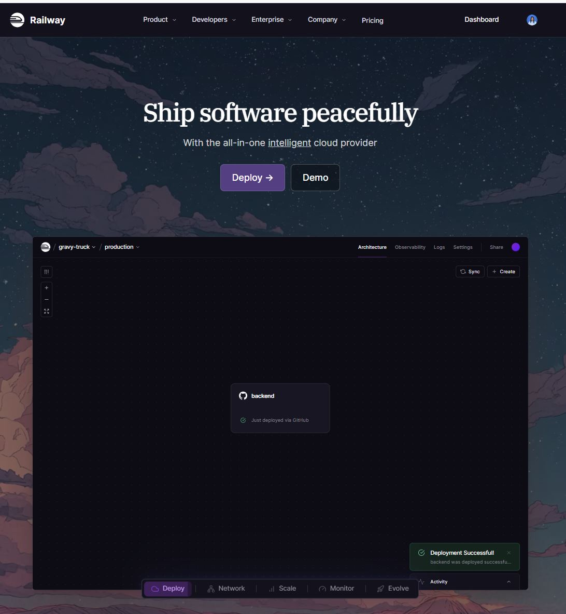
Selecionar o template correto
No painel do Railway, clique em New Project e depois em Deploy a Template. Na busca, digite n8n.
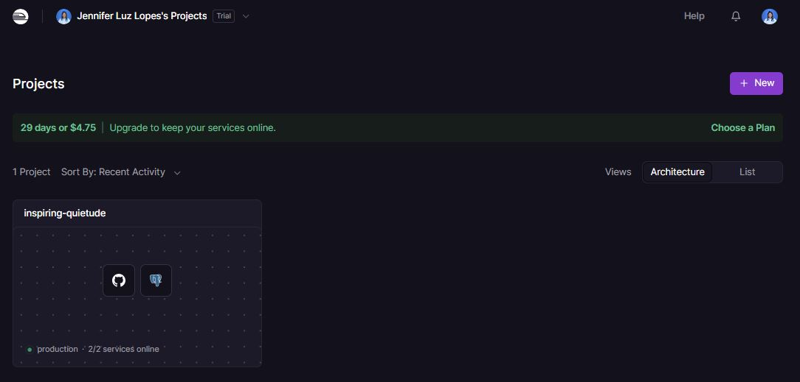
Vão aparecer mais de um resultado. Selecione o template chamado simplesmente n8n, aquele com 1 ou 2 serviços (n8n + Postgres).
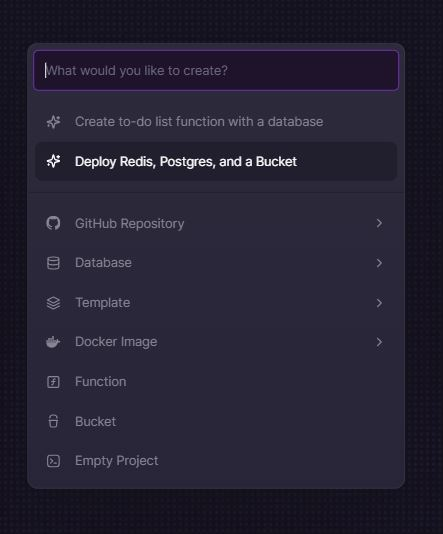
Existe um template chamado “N8N With Workers” que instala 4 serviços (Primary, Worker, Redis, Postgres). Ele funciona, mas consome os créditos significativamente mais rápido. Para uma newsletter, o template leve é suficiente.
Clique em Deploy Now e aguarde cerca de 3 minutos enquanto o Railway provisiona o ambiente.
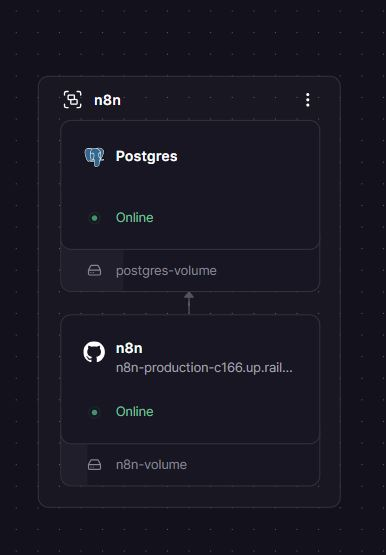
Gerar a URL pública
Após o deploy, acesse o projeto criado e clique no serviço do n8n. Vá na aba Settings > Networking e clique em Generate Domain.
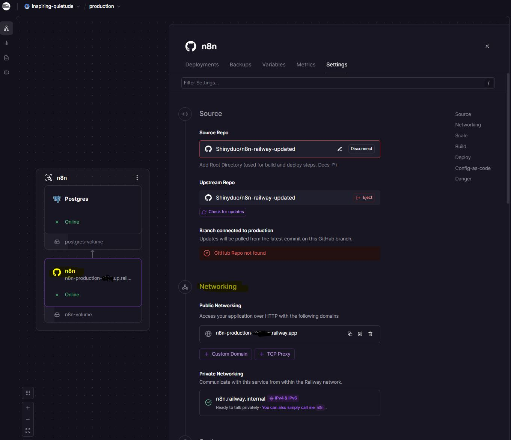
O Railway vai gerar uma URL no formato:
https://n8n-production-xxxx.up.railway.appGuarde essa URL, pois ela será usada em vários momentos ao longo da configuração.
Criar a conta no n8n
Acesse a URL gerada no navegador. Na primeira vez, o n8n solicita a criação de uma conta de administrador. Preencha:
- Email: seu e-mail
- First Name / Last Name: seu nome
- Password: senha com no mínimo 8 caracteres, 1 número e 1 letra maiúscula
Anote a senha em um gerenciador de senhas. Em um servidor self-hosted, não há recuperação automática.
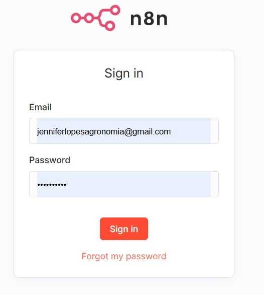
Após o login, o n8n exibe um questionário de personalização, que você pode pular clicando em Comece agora.
Em seguida, ele oferece uma licença gratuita com recursos extras de depuração e histórico de execuções. Vale aceitar: basta informar o e-mail e confirmar. Os recursos ficam disponíveis permanentemente.
Parte 2: Criar o fluxo no n8n
Conceito: o que é um webhook
Um webhook é um endpoint HTTP que fica aguardando requisições externas. Ao contrário de uma API onde você faz uma pergunta e espera uma resposta, no webhook você registra uma URL e qualquer sistema que conhece essa URL pode enviar dados para ela a qualquer momento.
No nosso fluxo, o formulário HTML do site envia um
POSTpara o webhook do n8n assim que o visitante clica em “Inscrever”. O n8n recebe essePOST, extrai os dados do corpo da requisição e os processa.
Criar o fluxo no n8n
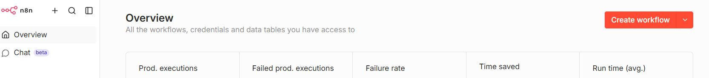
Adicionar o nó Webhook
Dentro do n8n, clique em New Workflow. Clique no + e adicione o nó Webhook.
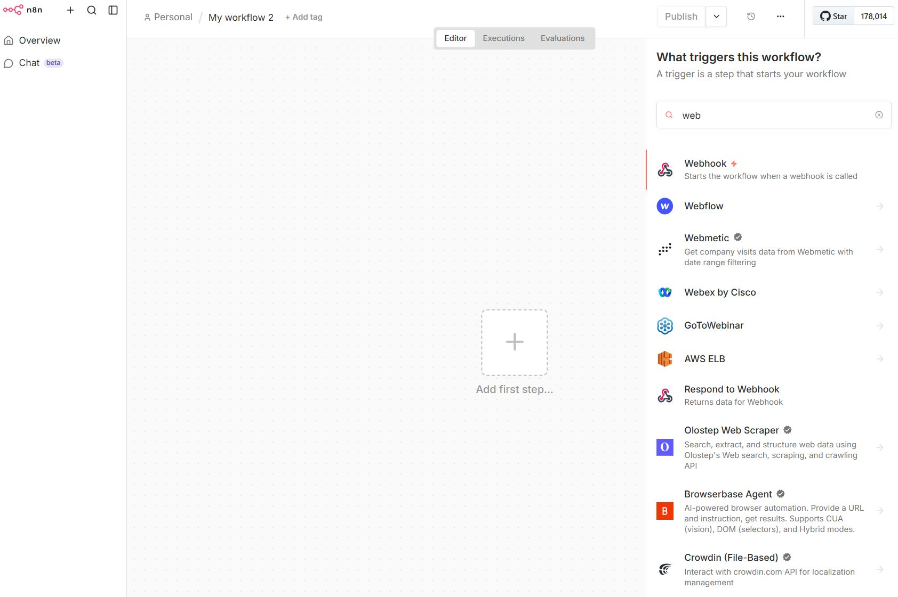
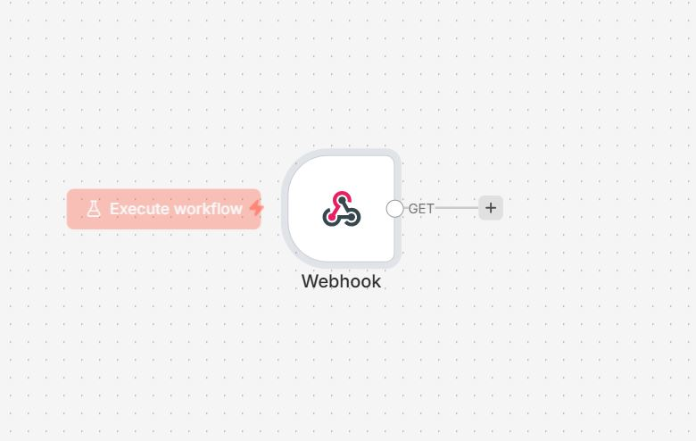
Na configuração do nó:
- HTTP Method: POST
- Path: pode deixar o gerado automaticamente
- Respond: selecione Using ‘Respond to Webhook’ Node
Após configurar, clique em Production URL e copie a URL exibida. Ela tem o formato:
https://n8n-production-xxxx.up.railway.app/webhook/[identificador]Essa URL será colada no formulário HTML mais adiante.
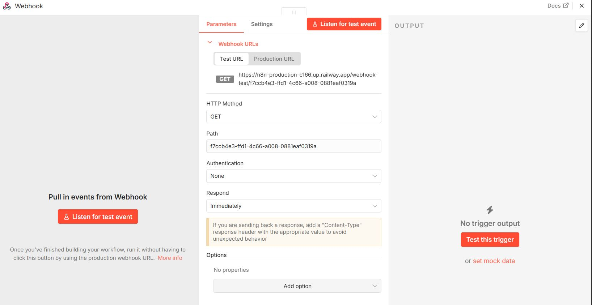
Adicionar o nó Respond to Webhook
Sem ele, o navegador bloqueia a requisição do formulário por política de CORS. O botão de envio fica girando indefinidamente e nenhum dado chega ao n8n.
O que é CORS e por que ele importa aqui:
Quando um formulário em um site tenta enviar dados para outro domínio, no caso o Railway, o navegador executa uma verificação de segurança chamada preflight. Antes de enviar os dados de fato, ele envia uma requisição OPTIONS perguntando ao servidor se aquele domínio está autorizado a fazer a requisição. O servidor precisa responder com cabeçalhos HTTP específicos autorizando a origem. O nó Respond to Webhook é o mecanismo pelo qual o n8n responde a essa verificação.
Clique no + saindo diretamente do nó Webhook e adicione o nó Respond to Webhook.
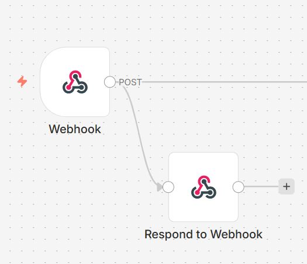
Configure assim:
- Respond With: Text
- Response Body:
OK - Em Options, adicione Response Headers com três entradas:
| Name | Value |
|---|---|
Access-Control-Allow-Origin |
* |
Access-Control-Allow-Methods |
POST, OPTIONS |
Access-Control-Allow-Headers |
Content-Type |
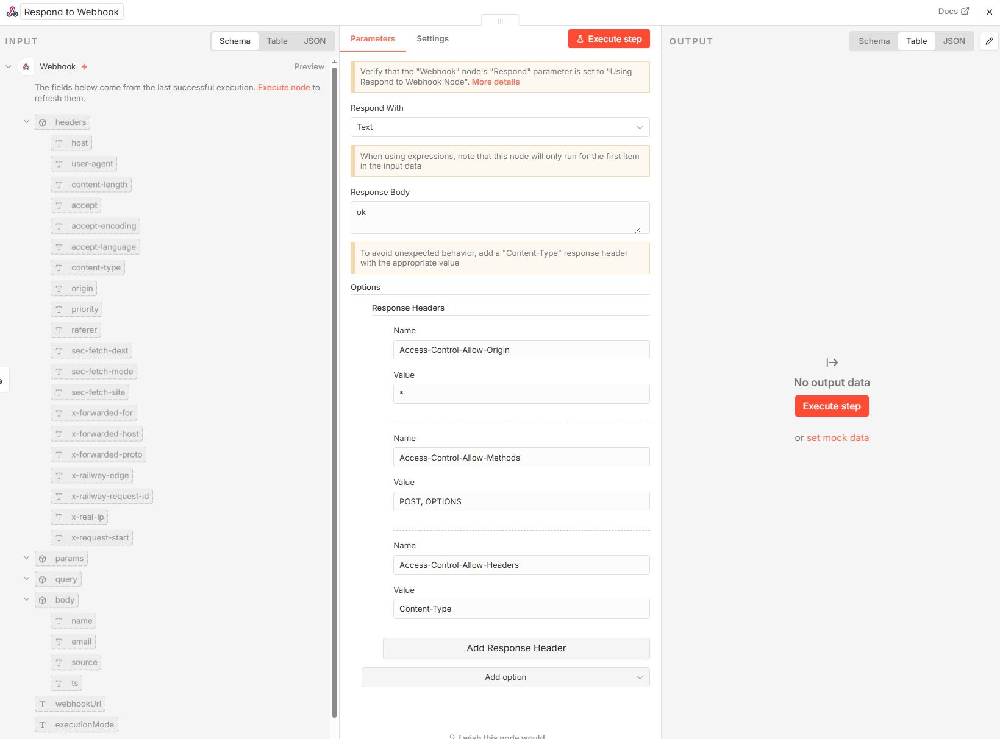
Atenção na topologia da conexão: o nó Respond to Webhook deve estar conectado diretamente ao Webhook, em paralelo com o Google Sheets, e não em sequência após ele. O Webhook deve ter duas saídas independentes:
Webhook ──► Respond to Webhook
└──► Append row in sheet ──► Send a messageConectar o Respond to Webhook após o Google Sheets, em sequência, faz com que o fluxo não funcione corretamente. O navegador precisa receber a resposta CORS antes do processamento dos dados. Verifique sempre se o Webhook tem duas saídas independentes.
Configurar o Google Sheets
Preparar a planilha
Antes de configurar o nó, crie uma planilha no Google Sheets com as seguintes colunas na primeira linha:
Nome | Email | DataOs nomes das colunas precisam ser exatamente esses, pois o n8n mapeia os campos pelo nome.
Criar as credenciais OAuth no Google Cloud
O n8n acessa o Google Sheets via OAuth 2.0. OAuth 2.0 é um protocolo de autorização que permite que uma aplicação acesse recursos em nome de um usuário sem que a aplicação precise conhecer a senha desse usuário. Em vez disso, o usuário autoriza a aplicação no próprio painel do Google, e o Google emite um token de acesso temporário.
Para configurar isso, é preciso criar uma credencial no Google Cloud Console.
Passo 1: Criar o projeto
- Acesse console.cloud.google.com
- Clique em Selecionar projeto > Novo projeto
- Nome sugerido:
cafe-com-r, clique em Criar
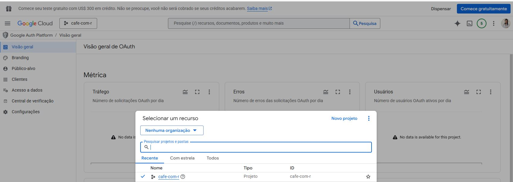
Passo 2: Ativar as APIs
- Vá em APIs e serviços > Biblioteca
- Busque e ative: Google Sheets API
- Busque e ative: Google Drive API
- Busque e ative: Gmail API
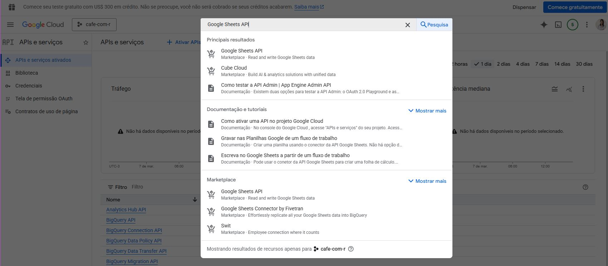
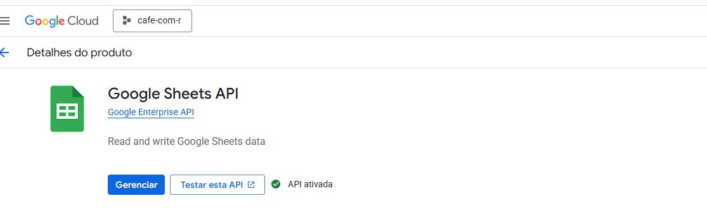
Se as APIs não estiverem ativadas antes de tentar conectar, o n8n vai retornar um erro 414 (URI too long) ao tentar gerar a URL de autorização. Ative as três APIs antes de continuar.
Passo 3: Configurar a tela de consentimento
- Vá em APIs e serviços > Google Auth Platform (ou Tela de consentimento OAuth)
- Configure com tipo Externo
- Preencha apenas o nome do app, pois os outros campos são opcionais para uso pessoal
Passo 4: Criar a credencial OAuth
- Vá em Clientes > Criar um cliente OAuth
- Tipo de aplicativo: Aplicativo da Web
- Em Origens JavaScript autorizadas, adicione apenas o domínio base:
https://n8n-production-xxxx.up.railway.app- Em URIs de redirecionamento autorizados, adicione a URL completa:
https://n8n-production-xxxx.up.railway.app/rest/oauth2-credential/callback- Clique em Criar e copie o ID do cliente e o Segredo do cliente
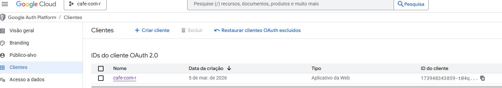
Origens JavaScript autorizadas aceita apenas o domínio base, sem caminho. Colocar a URL completa nesse campo gera um erro de “Origem inválida”.
URIs de redirecionamento autorizados é onde vai a URL completa com /rest/oauth2-credential/callback.
São dois campos distintos na mesma tela. Confundi esses campos na primeira tentativa e fiquei meia hora tentando entender por que a autorização falhava.
Passo 5: Adicionar usuário de teste
Como o app está em modo de desenvolvimento, apenas e-mails cadastrados na lista de testadores conseguem autenticar.
Vá em Google Auth Platform > Público-alvo > Usuários de teste e adicione o seu e-mail.
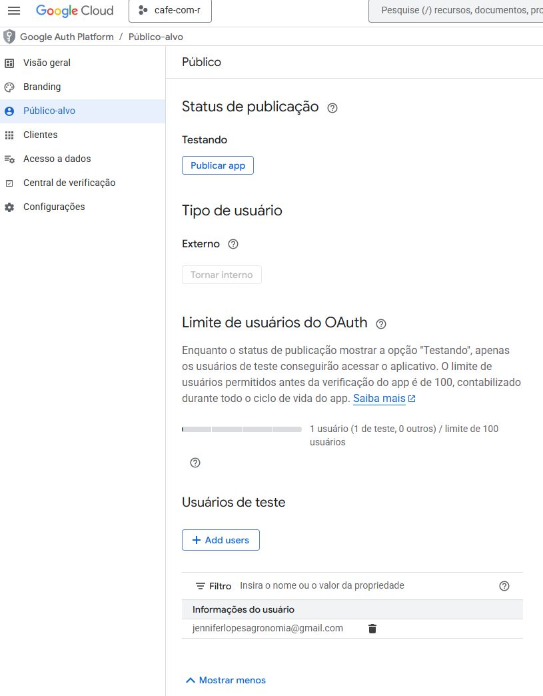
Se aparecer a mensagem “Acesso bloqueado: o app não concluiu o processo de verificação do Google”, seu e-mail não está na lista de testadores. Adicione-o conforme descrito acima e tente novamente.
Conectar o Google Sheets no n8n
No nó Google Sheets, clique em Select Credential > Add new credential. Cole o ID do cliente e o segredo nos campos correspondentes e clique em Sign in with Google.
Após conectar, configure o nó:
- Operation: Append Row
- Document: selecione a planilha criada
- Sheet: selecione a aba (ex: Página1)
Nos campos de mapeamento, ative Expression em cada campo e use:
| Campo na planilha | Expression |
|---|---|
| Nome | { $json.body.name } |
{ $json.body.email } |
|
| Data | { $json.body.ts } |
Por que $json.body.name e não $json.name?
Quando o formulário envia um POST com corpo JSON, o n8n estrutura os dados recebidos assim:
{
"body": {
"name": "Jennifer",
"email": "jennifer@exemplo.com",
"source": "newsletter-widget",
"ts": "2025-06-01T14:32:00.000Z"
},
"headers": { ... },
"params": { ... }
}O conteúdo que você enviou no corpo da requisição fica dentro de .body. Usar $json.name diretamente retorna undefined e a célula fica vazia. Fiz esse erro na primeira configuração, e você não precisa repetir.
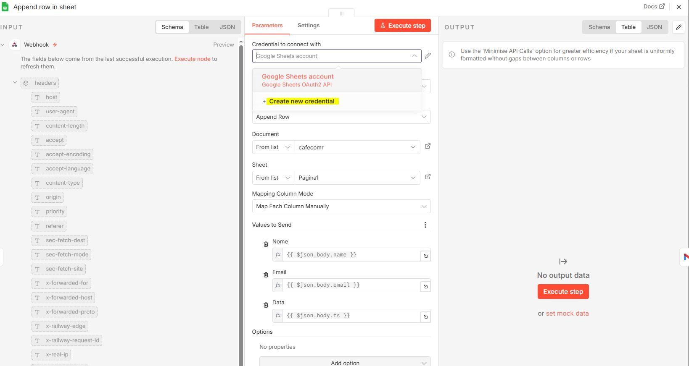
Configurar o Gmail
Adicione o nó Gmail após o Google Sheets. Selecione a ação Send a message.
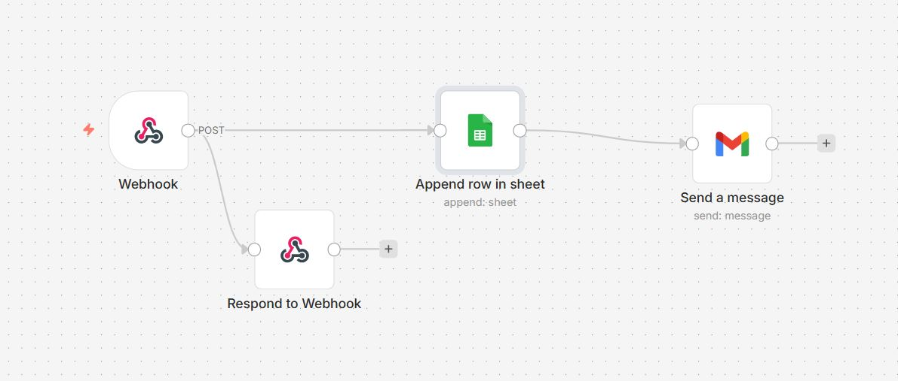
Crie uma nova credencial usando o mesmo ID e segredo criados para o Google Sheets. A Gmail API já foi ativada anteriormente, então a conexão deve funcionar diretamente.
Preencha os campos:
To (ative Expression):
{{ $('Webhook').item.json.body.email }}Subject (ative Expression):
Bem-vinda(o) ao Cafe com R, {{ $('Webhook').item.json.body.name }}!Email Type: HTML
Message (modo Fixed, não precisa de Expression):
<div style="font-family:sans-serif;max-width:500px;margin:0 auto;
padding:32px;background:#FDFAF4;border:1px solid #A1887F;">
<h2 style="font-family:Georgia,serif;color:#3E2723;">
Ola, {{ $('Webhook').item.json.body.name }}!
</h2>
<p style="color:#5D4037;line-height:1.7;">
Que alegria ter voce no <strong>Cafe com R</strong>!
</p>
<div style="border-left:3px solid #A1887F;padding:12px 20px;
margin:24px 0;background:#EFEBE9;">
<p style="color:#5D4037;font-style:italic;line-height:1.8;margin:0;">
Que cada <strong>gole</strong> desperte uma nova ideia.<br>
Que cada <strong>script</strong> abra uma nova conversa.<br>
Que o <strong>Cafe com R</strong> se torne um ponto de encontro nosso.
</p>
</div>
<div style="text-align:center;margin:24px 0;">
<a href="https://jenniferlopes.quarto.pub/portifolio"
style="background:#3E2723;color:#F5F5DC;text-decoration:none;
padding:12px 28px;border-radius:4px;font-size:13px;
letter-spacing:1px;font-weight:500;">
Visitar o Cafe com R
</a>
</div>
<p style="color:#5D4037;line-height:1.7;">
Prepare o cafe e ate a proxima edicao.
</p>
<hr style="border:none;border-top:1px solid #EFEBE9;margin:24px 0;">
<p style="color:#A1887F;font-size:12px;">
Com carinho, <strong>Jeni</strong><br>
<a href="https://jenniferlopes.quarto.pub/portifolio"
style="color:#2E7D32;">Cafe com R</a>
</p>
</div>Em Options, adicione Sender Name e preencha com:
Jeni | Cafe com R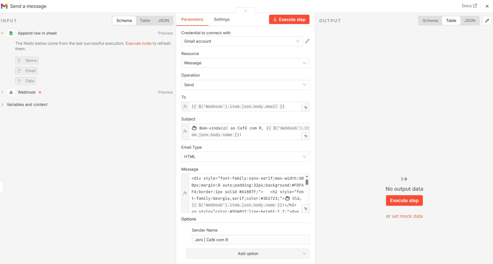
Publicar o fluxo
Clique em Save (ou Ctrl+S) e depois em Publish no canto superior direito. O fluxo entra em produção imediatamente e começa a receber requisições na URL do webhook.
Parte 3: Formulário HTML
Estrutura do formulário
O formulário é um arquivo HTML autônomo (newsletter-widget.html) embedado no site Quarto via iframe. Ele coleta nome e e-mail, envia os dados para o webhook via fetch e exibe uma confirmação de sucesso.
O ponto central no código é a variável WEBHOOK_URL:
const WEBHOOK_URL = "https://n8n-production-xxxx.up.railway.app/webhook/[id]";Substitua pelo valor copiado na configuração do nó Webhook. Use a Production URL, não a Test URL.
A função de envio:
async function handleSubmit() {
const name = document.getElementById("name").value.trim();
const email = document.getElementById("email").value.trim();
if (!email || !email.includes("@")) {
document.getElementById("email").style.borderColor = "#b5451b";
document.getElementById("email").focus();
return;
}
const btn = document.getElementById("submit-btn");
btn.classList.add("loading");
btn.disabled = true;
try {
await fetch(WEBHOOK_URL, {
method: "POST",
headers: { "Content-Type": "application/json" },
body: JSON.stringify({
name,
email,
source: "newsletter-widget",
ts: new Date().toISOString()
})
});
} catch (e) {
console.warn("Webhook error:", e);
}
await new Promise(r => setTimeout(r, 900));
btn.classList.remove("loading");
document.getElementById("success").classList.add("show");
}Por que new Date().toISOString()?
O método toISOString() retorna a data e hora no formato ISO 8601, que é um padrão internacional para representação de datas e horas: 2025-06-01T14:32:00.000Z. Usar esse formato em vez de strings como “01/06/2025 14:32” garante que os dados possam ser ordenados, filtrados e parseados corretamente em qualquer sistema, inclusive em queries SQL ou em manipulações de data no R com lubridate.
Se o formulário for embedado via iframe, o navegador pode carregar o HTML em contexto data: URL. Nesse caso, o acesso ao localStorage é bloqueado com o erro:
SecurityError: Failed to read the 'localStorage' property from 'Window':
Storage is disabled inside 'data:' URLs.O botão trava e nenhum dado é enviado. Remova qualquer uso de localStorage do código. Os dados já ficam persistidos no Google Sheets via webhook.
Embeder no Quarto
Salve o arquivo newsletter-widget.html na mesma pasta do arquivo .qmd. No .qmd, adicione o bloco abaixo onde quiser que o formulário apareça:
```{=html}
<iframe
src="newsletter-widget.html"
width="100%"
height="600"
frameborder="0"
scrolling="no"
style="border:none; display:block; margin: 0 auto;">
</iframe>
```O iframe só renderiza corretamente quando o site está sendo servido via quarto preview ou após publicação. O painel de preview interno do RStudio pode não exibir o widget, e esse é o comportamento esperado.
Parte 4: Erros que encontrei e como resolvi
Formulário trava no estado de carregamento
Causa: O navegador está bloqueando a requisição por política de CORS.
Como confirmar: Abra o site, pressione F12 > aba Console > tente enviar o formulário. Procure erros vermelhos com:
Access to fetch... has been blocked by CORS policy- Solucao: Adicionar o nó Respond to Webhook com os cabeçalhos CORS corretos, conforme descrito na Parte 2. Verifique também se o workflow está publicado (botão Publish ativo).
Erro localStorage no console
Causa: O formulário está sendo carregado em contexto
data:URL.Solucao: Remover todo uso de
localStoragedo código. Os dados são persistidos pelo webhook no Google Sheets.
Erro 403: access_denied (Google)
Causa: O app está em modo de teste e o e-mail usado não está na lista de usuários autorizados.
Solucao: No Google Cloud Console, vá em Google Auth Platform > Público-alvo > Usuários de teste > adicione o seu e-mail > salve. Depois tente conectar novamente no n8n.
Erro OAuth 414 ao clicar em “Sign in with Google”
Causa: As APIs do Google não estavam ativadas antes de tentar conectar.
Solucao: Ative Google Sheets API, Google Drive API e Gmail API no Google Cloud Console antes de criar a credencial OAuth.
Erro de “Origem inválida” ao cadastrar URL no Google Cloud
Causa: A URL completa foi colada no campo Origens JavaScript autorizadas.
Solucao: São dois campos distintos:
Origens JavaScript autorizadas, apenas o domínio base:
https://n8n-production-xxxx.up.railway.appURIs de redirecionamento autorizados, URL completa:
https://n8n-production-xxxx.up.railway.app/rest/oauth2-credential/callback
Dados não aparecem na planilha
Causa 1: O fluxo não está publicado. O botão Publish precisa estar ativo no n8n.
Causa 2: O mapeamento dos campos usa
$json.nameem vez de$json.body.name. Como o webhook recebe os dados no corpo da requisição POST, o caminho correto é semprebody.name,body.emailebody.ts.Causa 3: O formulário está usando a Test URL do webhook em vez da Production URL. Na configuração do nó Webhook, clique em Production URL e copie essa URL.
Template errado no Railway
Causa: Foi selecionado o template N8N With Workers (4 serviços) em vez do template simples.
Solucao: Delete o projeto no Railway e crie novamente usando o template com 1 ou 2 serviços.
Resumo das etapas
- Criar conta no Railway e subir o template simples do n8n (1 ou 2 serviços)
- Gerar o domínio público e criar a conta de administrador no n8n
- Criar o fluxo com os nós: Webhook > Respond to Webhook (paralelo) > Google Sheets > Gmail
- Criar projeto no Google Cloud e ativar as APIs: Sheets, Drive e Gmail
- Criar credencial OAuth e adicionar o e-mail como usuário de teste
- Conectar Google Sheets e Gmail no n8n usando as credenciais OAuth
- Mapear os campos:
$json.body.name,$json.body.email,$json.body.ts - Colar a Production URL do webhook no formulário HTML
- Remover uso de
localStoragedo formulário - Publicar o fluxo no n8n e publicar o site Quarto
Uma vez configurado, o sistema não requer intervenção manual. Cada nova inscrição é registrada na planilha e dispara o e-mail de boas-vindas automaticamente.
Na semana que vem, vou complementar este material. Vou ensinar formas de envio e automação através do pacote Blastula e muito mais!!!
AGUARDEM QUE SEMANA QUE VEM TEM MAIS!
Gostou do tutorial? Assine o Café com R e receba conteúdo de R e Ciência de Dados toda semana.